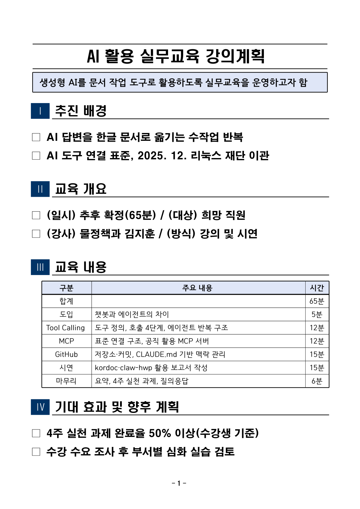

0 / 0
끝날 때까지 2 ↔ 3 반복, 4는 맨 마지막
→ 다음 · ← 이전 · Space 자동
1 요청·도구 목록 전달→
작업 중 반복 구간2 AI가 도구 요청
tool_use→3 프로그램 실행·결과 반환
tool_result→AI가 결과 확인·재판단
미완료라면 다시 2로
→4 완료 후 최종 답변
tool_use→3 프로그램 실행·결과 반환
tool_result→AI가 결과 확인·재판단
미완료라면 다시 2로
중간 설명은 4가 아닙니다. 도구 결과도 다음 입력에 더해집니다. AI가 확인 후, 미완료면 다시 2로 돌아갑니다.
AI
도구 요청 장면0 / 7여러 호출을 묶은 장면 포함
핵심 장면 바로 보기
대화 · AI의 작업 설명
도구 호출 로그 (tool_use / tool_result)
AI가 도구를 부르면 여기에 쌓입니다
문서 미리보기 (render 결과)
아직 만든 문서가 없습니다
시연용 프롬프트 (그대로 복사해서 Claude Code · Codex에 붙여넣기)
오늘 강의 「AI 활용 실무교육(Tool Calling·MCP·GitHub)」의 강의계획을 1쪽 보고서로 만들어줘.
1. 이 폴더의 lecture.pptx를 kordoc으로 읽고, 파트별 내용과 시간을 뽑아줘.
2. 구성: 추진 배경 → 교육 개요(일시·대상·강사·방식) → 교육 내용(표: 구분·주요 내용·시간, 합계 행) → 기대 효과 및 향후 계획
3. 제목 바로 아래 요약은 "~하고자 함" 한 문장.
4. 자료에 없는 일시·장소는 지어내지 말고 "추후 확정"으로 써.
5. kordoc 공문서 게이트(보고서 프리셋)로 검수하고, 지적이 있으면 고쳐서 다시 검수해.
6. 통과하면 보고서 프리셋 HWPX(강의계획.hwpx)로 만들고, render로 PNG를 떠서 원고와 대조해 봐. 1쪽을 넘거나 빠진 글자가 있으면 고쳐서 다시 만들어.
7. 끝나면 고친 횟수와 이유를 표로 정리하고, 최종 PNG를 보여줘.
이 프롬프트가 잘 먹히는 이유
- 입력 파일을 지정 — "lecture.pptx를 kordoc으로" → AI가 어떤 도구를 부를지 바로 정함
- 구성 순서를 고정 — 왜(배경) → 무엇(개요·내용) → 어떻게(효과·계획)
- 지어내지 말 것을 명시 — 일시·장소는 "추후 확정"
- 검수 → 수정 반복을 지시 — 조건부 호출 패턴이 돌아감
- 눈으로 확인 지시 — render 결과와 원고 대조 (아래 실제 사례 참고)
미리 준비
- Node.js 20 이상,
npx -y kordoc setup으로 MCP 등록 - 작업 폴더에
lecture.pptx(강의 자료) 넣기 - (선택) 다듬기용 claw-hwp:
claude plugin install claw-hwp@claw-hwp - 네트워크·설치 문제 대비: 이 페이지의 ① 시연 재생을 백업으로
최종 결과 (1쪽 · 게이트 통과 · 구조 검증 통과)

고친 횟수와 이유
| 차수 | 발견된 문제 | 누가 찾았나 | 조치 |
|---|---|---|---|
| 1차 | 배경에 사실·수치 없음, 기대효과에 목표치 없음 | lint 게이트 (구성 검수) | 배경에 날짜 사실, 효과에 목표치 추가 |
| 1차 | □ 항목 4개가 한 줄 초과 | generate 경고 | 문장 축약 |
| 1차 | 본문의 "MCP"가 앞 단어와 함께 사라짐 | render 이미지 대조 | 본문은 "도구 연결 표준"으로 표기 (표 안은 정상) |
| 2차 | 2쪽으로 2줄 넘침 | render (2페이지) | 항목 2개 정리 → 1쪽 |
| 3차 | — | 게이트 통과 · 경고 0 · validate 통과 | 완료 |
"MCP 누락" 사례가 주는 교훈
kordoc 4.24.0의 stripLawCodes 정규식 [가-힣A-Za-z·]*\s*MCP\s*(?:조회|호출|응답)? 이 원래는 "법령 MCP 조회" 같은 AI 작업 흔적을 지우려는 것인데, 본문에 쓴 MCP도 앞 단어와 함께 지웁니다.
도구는 틀릴 수 있다 → 결과를 눈으로 확인하는 단계(render)를 꼭 넣는다. 오늘 강의의 "사람이 최종 확인" 원칙의 실제 사례입니다.
NEXT · 다음 시간에
보고서 1장 → 매일 스스로 갱신되는 대시보드
같은 방법을 키워 4개월 동안 만든 제주 공약·의회 대시보드 이야기 →